Toalla tipo oso
Ideal para empezar a colaborar; el mismo personaje, en formato toalla.
$10
Adopta un héroe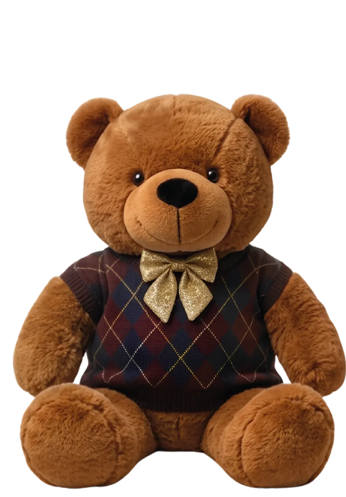
Adopta un Héroe de Rescate y financia la ruta solidaria para que personas con cáncer lleguen a su tratamiento.
Ya somos 44 pasajeros de honor
609meta
44pasajeros de honor
565diferencia
Progreso hacia el primer vuelo solidario: 7,2 por ciento de la meta.
Tres pasos, los mismos que siguieron quienes ya son 44 pasajeros de honor.
En toalla, llavero u oso grande. Edición limitada, se coordina por WhatsApp y en los puntos de venta que anunciaremos.
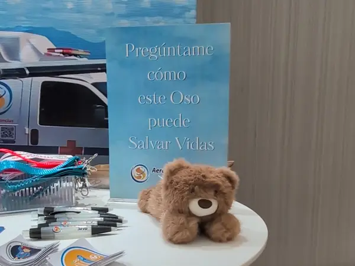
Quedas registrado como pasajero de honor del vuelo ONCO 001.
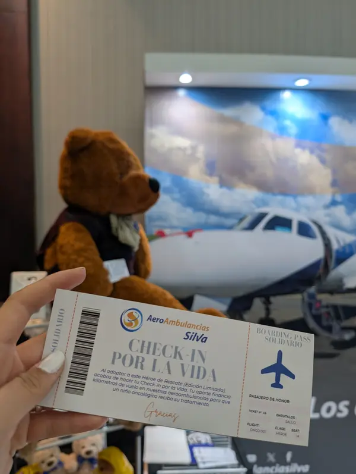
Para trasladar a personas con cáncer desde su región hasta Caracas, con tripulación médica a bordo.
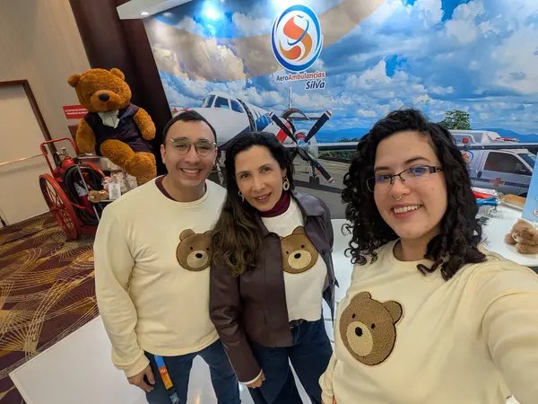
Presentada en el XIII Congreso Científico Internacional de Oncología (Oncoaliado), Caracas, 18 y 19 de septiembre de 2026.
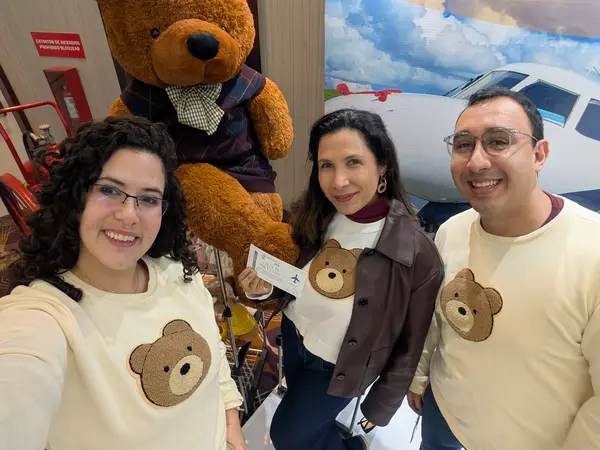
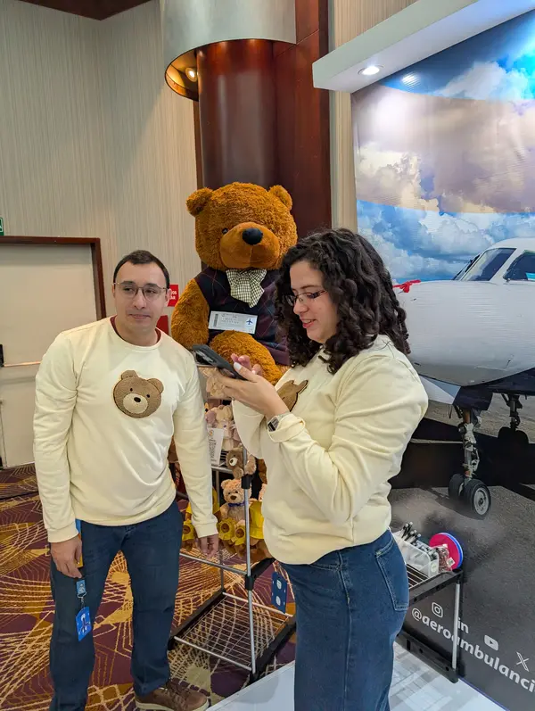
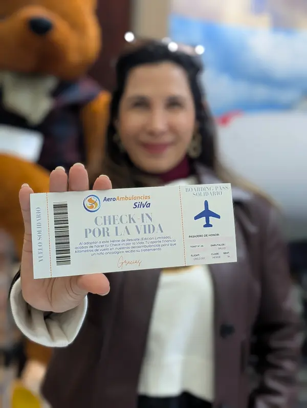
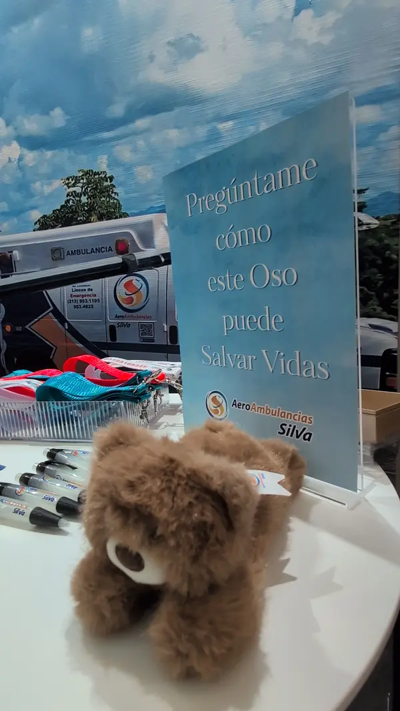
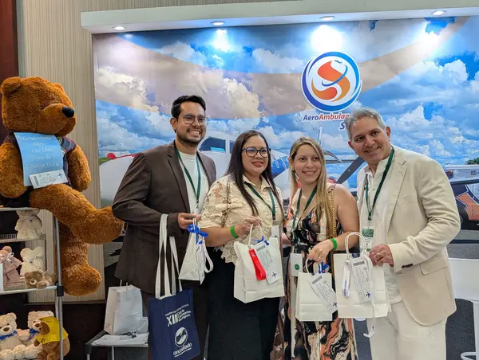
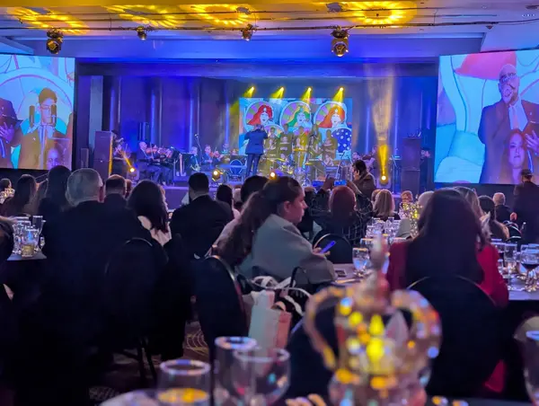
44 pasajeros de honor en dos días
Los osos grandes se agotaron el segundo día.
| Producto | Aportes |
|---|---|
| Toallas | 27 |
| Llaveros | 13 |
| Osos grandes | 4 |
Edición limitada. El pedido y el pago se coordinan por WhatsApp.
Ideal para empezar a colaborar; el mismo personaje, en formato toalla.
$10
Oso de bolsillo, tipo llavero, de 8 cm.
$20
El Héroe de Rescate, de 20 cm.
$40
Coordina el envío y la forma de pago por WhatsApp al adoptar tu héroe.
Formas de apoyar la campaña con retorno reputacional para la organización.
600 osos
Financia un vuelo completo. Su empresa queda asociada nominalmente a la ruta patrocinada.
Por tramos
Compra de bloques fraccionados y su empresa queda asociada a la ruta patrocinada, con exposición proporcional al aporte.
$10 – $40
Adquisición de Héroes de Rescate por unidad, como obsequio corporativo o material de responsabilidad social.
Cada Héroe de Rescate llega con su boarding pass. En él quedas registrado como pasajero de honor del vuelo ONCO 001 — el vuelo que tu aporte ayuda a financiar.
Si hoy no puedes adoptar un héroe, puedes hacer que la campaña llegue a alguien que sí.
Escanea o descarga el código para llevar la campaña a otra pantalla.
Enlace copiado
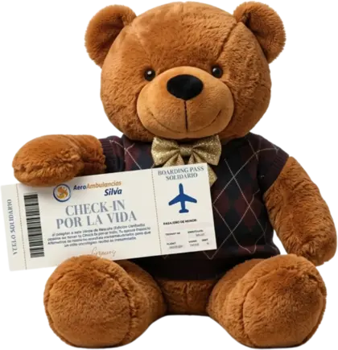
Desarrollar rutas sanitarias en colaboración con aliados individuales y empresariales.
Maracaibo, Santo Domingo del Táchira, Barinas, Puerto Ayacucho, Puerto Ordaz y Güiria, todas hacia Caracas.
Cada ruta completa tiene el potencial de mover desde 1 paciente crítico hasta 10 pasajeros en configuración sanitaria.
Los pacientes llegan a través de fundaciones oncológicas regionales, que hacen la selección y el seguimiento médico.
No es una donación: es la compra formal de la ruta aeromédica, con factura, del servicio ordinario de Aeroambulancias Silva.
Vuelos en aeronave turbohélice con tripulación médica a bordo. Cada ruta operada traslada hasta 22 personas entre pacientes y representantes.
A la campaña de vuelos solidarios de Aeroambulancias Silva, que traslada personas con cáncer hasta Caracas para su tratamiento.
Se coordina por WhatsApp: ahí se acuerdan la forma de pago, el envío y los tiempos de entrega.
Sí. En la sección Para empresas están los tres niveles, o puedes escribir directamente por WhatsApp.
Compartiendo esta página. Cada persona que la reenvía ayuda tanto como quien adopta un héroe.
{kind=link}